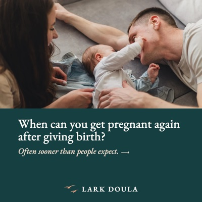

The Research Behind My Posts
When I reference a study in a post on Instagram or Facebook, I list it here with a link so you can read it for yourself. Further down, you’ll also find some of my own published research.
-

Posted October 27, 2026
When can you get pregnant again after giving birth?
Luff et al., 2024, “Prevalence and correlates of very rapid repeat pregnancy,” Paediatric and Perinatal Epidemiology
Read my full study
Highlights from My Research
Pregnancy and Birth
-
Characteristics associated with tub entry and birth in water among people planning a waterbirth
Malloy, Luff, et al., 2026, Journal of Midwifery & Women’s Health
-
Association between negative pregnancy desires and recent condomless sex among couples in Vietnam
Luff et al., 2026, Journal of Sex Research
-
Language-related differences in prenatal depression screening uptake in the USA Midwest, 2019–2024
Luff et al., 2026, BJPsych Open
-
Prevalence and correlates of very rapid repeat pregnancy
Luff et al., 2024, Paediatric and Perinatal Epidemiology
Pediatrics
-
Enhancing care for hospitalized children with medical complexity via targeted education
Butler, Luff, et al., 2026, Hospital Pediatrics
-
Predicting infant nonattendance at the next recommended well-child visit: model development and validation
Luff et al., 2026, medRxiv (preprint)
-
Timing of renal and bladder ultrasound after first febrile urinary tract infection: a hospitalist dilemma
Marsh et al., 2026, Hospital Pediatrics
-
Immunization coverage and clinical documentation of vaccine refusal in pediatric clinics: a retrospective analysis in the Midwestern United States, 2022–2024
Luff et al., 2025, Journal of Pediatrics: Clinical Practice
-
Attendance patterns in well-child visits across diverse pediatric populations, Midwestern United States
Luff et al., 2025, Preventive Medicine Reports
Other Healthcare Research
-
Acupuncture in the emergency department: a retrospective evaluation of patient-reported outcomes and healthcare utilization
Luff et al., 2026, Acupuncture in Medicine
-
Downstream healthcare use associated with primary care in-person and telemedicine visits in 2022
Chang, Luff, et al., 2026, Journal of General Internal Medicine
-
Impact of language preference and comorbidities on telemedicine in primary care: retrospective analysis, US Midwest, 2022
Luff & Chang, 2026, Journal of General Internal Medicine
-
The role of patient, clinician, and neighborhood characteristics in predicting telemedicine engagement and modality in primary care
Chang & Luff, 2025, BMC Primary Care
-
Validity of partner reports of recent condomless sex
Luff et al., 2024, Sexually Transmitted Diseases
-
Effects of a novel erectogenic condom on men and women’s sexual pleasure: randomized controlled trial
Gallo et al., 2022, Journal of Sex Research